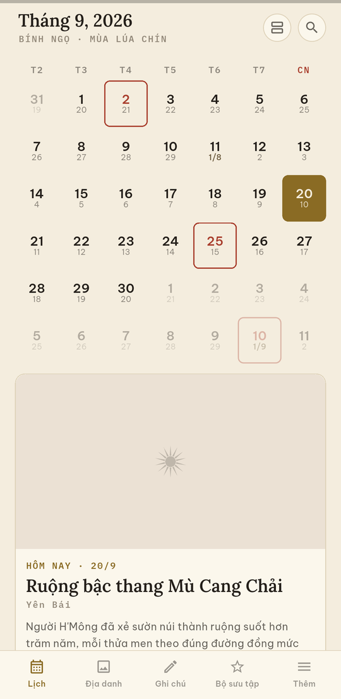
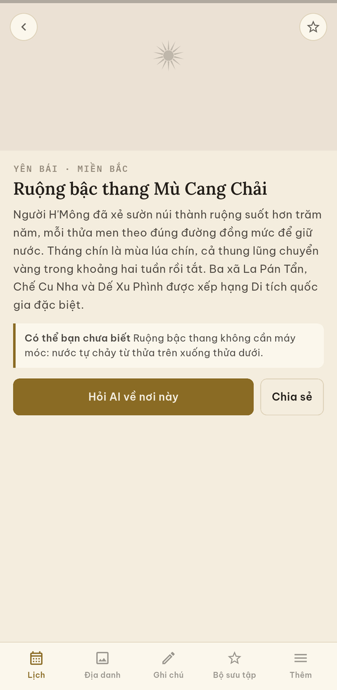
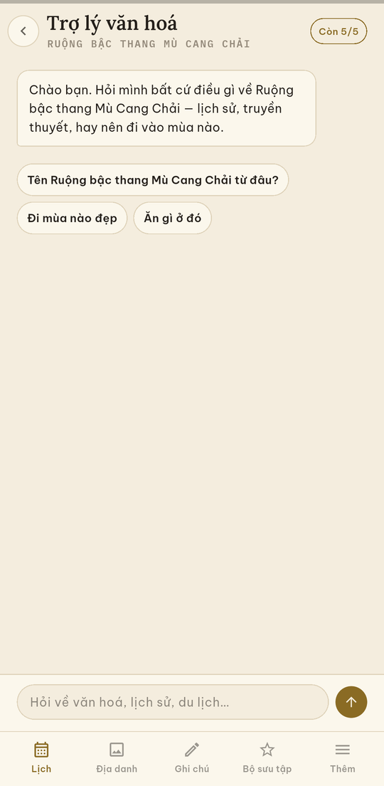

Ứng dụng này để làm gì Purpose of the app
Lạc Niên (tiếng Anh: Lac Nien) giúp người Việt theo lịch âm trong đời sống hằng ngày — xem ngày âm, chọn ngày lành cho việc cưới hỏi hay động thổ, nhớ ngày giỗ trong nhà vốn tính theo âm lịch, và mỗi ngày biết thêm một di sản của đất nước mình.
Việt Nam tính lịch âm theo múi giờ của riêng mình. Đó là lý do Tết Việt Nam từng lệch hẳn một ngày với Tết Trung Quốc, như các năm 1985 và 2007. Lạc Niên dùng đúng thuật toán Việt Nam, nên ngày tháng khớp với cuốn lịch giấy mà mọi người vẫn treo trong nhà.
Ứng dụng chạy đầy đủ khi không có mạng và không bắt đăng nhập. Đăng nhập là tuỳ chọn, chỉ để sao lưu bộ sưu tập của bạn.
Lac Nien (Vietnamese: Lạc Niên) helps people in Vietnam follow the lunar calendar in daily life — checking the lunar date, picking an auspicious day for a wedding or a house-warming, remembering a family death anniversary that falls on a lunar date, and learning about one Vietnamese heritage site each day.
Vietnam computes its lunar calendar in its own time zone, which is why Vietnamese Tết has fallen a full day apart from the Chinese New Year in years such as 1985 and 2007. Lac Nien uses the Vietnamese algorithm, so the dates match the printed almanacs people actually use.
The app works fully offline and does not require an account. Signing in is optional and serves only to back up your saved collection.
Ứng dụng làm được gì What the app does
Lịch âm và lịch dươngLunar & solar calendar
Ngày âm, Can Chi, tháng nhuận, và đủ danh sách ngày lễ Việt Nam.
Lunar dates, Can Chi sexagenary cycle, leap months, and the full Vietnamese holiday list.
Ngày tốt, giờ tốtAuspicious days and hours
Sao trực, giờ hoàng đạo, việc nên làm và việc nên kiêng của từng ngày.
Day stars, auspicious hours, and what is traditionally advised or avoided on each day.
Ngày giỗDeath anniversaries
Lưu theo ngày âm, nên năm nào ứng dụng cũng tự tìm ra đúng ngày dương.
Stored by lunar date, so the app finds the correct solar date every year on its own.
Ghi chú và Google CalendarNotes and Google Calendar
Ghi chú nằm trong máy. Nối Google Calendar thì sự kiện của bạn hiện cạnh ngày âm.
Personal notes stay on the device. If you connect Google Calendar, your events appear beside the lunar dates.
Mỗi ngày một địa danhA landmark a day
Một di sản Việt Nam mỗi ngày, tranh vẽ tay, kèm một câu chuyện ngắn.
One Vietnamese heritage site each day, hand-illustrated, with a short story.
Ô xem nhanhHome-screen widget
Ngày dương và ngày âm hôm nay ngay trên màn hình chính, tự đổi lúc nửa đêm.
Today's solar and lunar date on the phone's home screen, updated every midnight.
Tải về Download
Phiên bản 1.0.0 · Android Version 1.0.0 · Android
Tải Lạc Niên 1.0.0 · 25 MB Download Lac Nien 1.0.0 · 25 MBDùng cho gần như mọi điện thoại Android từ 2017 trở lại đây.
Works on virtually every Android phone released since 2017.
Máy báo “không cài được ứng dụng này”?
Phone says “app not installed”?
Điện thoại đời cũ hơn dùng bản 32-bit: tải bản 32-bit (23 MB). Chỉ tải bản này khi bản ở trên không cài được — nó chạy chậm hơn một chút trên máy đời mới.
Older phones need the 32-bit build: download the 32-bit build (23 MB). Only use this one if the button above fails — it runs slightly slower on newer phones.
Đây là bản chạy thử, chưa lên cửa hàng ứng dụng. Vì thế điện thoại sẽ
hỏi vài câu trước khi cho cài — phần hướng dẫn ngay bên dưới đi qua từng
bước một.
This is a test build, not yet on an app store. Your phone will ask a
few questions before it installs — the guide below walks through every
step.
Cài đặt — từng bước một Installing, step by step
Mất khoảng hai phút. Làm trên chính chiếc điện thoại Android bạn muốn dùng, không phải trên máy tính.
It takes about two minutes. Do this on the Android phone you want to use it on, not on a computer.
-
Bấm nút tải ở trênTap the download button above
Trình duyệt hiện câu hỏi đại ý “Tệp này có thể gây hại cho thiết bị của bạn. Vẫn tải xuống?”. Đây là câu Android hỏi với mọi file APK tải ngoài cửa hàng, không phải riêng Lạc Niên. Chọn Vẫn tải xuống hoặc OK.
Your browser will warn something like “This type of file can harm your device. Download anyway?”. Android shows this for every APK downloaded outside an app store, not just Lac Nien. Choose Download anyway or OK.
-
Mở file vừa tảiOpen the downloaded file
Kéo thanh thông báo từ mép trên xuống rồi bấm vào dòng
lac-nien-1.0.0-arm64.apk. Nếu thông báo đã trôi mất, mở ứng dụng Tệp (hoặc Files, Quản lý tệp) rồi vào thư mục Tải xuống và bấm vào file đó.Pull down the notification shade and tap
lac-nien-1.0.0-arm64.apk. If the notification is already gone, open the Files app, go to the Downloads folder, and tap the file there. -
Cho phép cài từ nguồn nàyAllow installs from this source
Lần đầu tiên, máy sẽ nói trình duyệt chưa được phép cài ứng dụng. Bấm Cài đặt trong hộp thoại đó — máy mở thẳng tới đúng ô cần bật — rồi gạt công tắc Cho phép từ nguồn này. Xong thì bấm nút Quay lại.
Công tắc này chỉ cấp quyền cho riêng trình duyệt bạn đang dùng, không mở toang cả máy. Bạn tắt lại được sau khi cài xong.
The first time, your phone will say the browser is not allowed to install apps. Tap Settings in that dialog — it jumps straight to the right switch — then turn on Allow from this source and press Back.
This grants permission to that one browser only, not to the whole phone. You can turn it off again once the app is installed.
-
Bấm Cài đặtTap Install
Có thể máy hiện thêm bảng Play Protect nói rằng chưa nhận ra nhà phát triển. Chọn Vẫn cài đặt. Chờ vài giây rồi bấm Mở.
You may also see a Play Protect panel saying the developer is unrecognised. Choose Install anyway. Wait a few seconds, then tap Open.
-
Lần đầu mở ứng dụngFirst run
Ba màn giới thiệu ngắn, bấm Bỏ qua nếu muốn vào thẳng. Sau đó máy hỏi có cho gửi thông báo không — đồng ý thì mỗi sáng bạn nhận một địa danh mới, từ chối thì mọi phần khác vẫn chạy đủ.
Three short intro screens — tap Skip to go straight in. Then your phone asks about notifications: allow it to get one landmark each morning, or decline and everything else still works.
-
Đặt ô xem nhanh (tuỳ chọn)Add the widget (optional)
Giữ tay vào chỗ trống trên màn hình chính → Tiện ích → tìm Lạc Niên → kéo ra màn hình. Có hai cỡ, 4×2 và 4×3.
Press and hold an empty spot on the home screen → Widgets → find Lạc Niên → drag it out. Two sizes are available, 4×2 and 4×3.
Vài câu hay gặp Common questions
Vì sao Google hiện cảnh báo khi tôi bấm kết nối?
Why does Google warn me when I connect?
Khi bạn bấm Tiếp tục với Google hoặc Kết nối Google Calendar, màn hình của Google có thể hiện dòng “Google hasn't verified this app”. Lạc Niên đang trong quá trình xác minh với Google, và cảnh báo này xuất hiện với mọi ứng dụng chưa xong thủ tục đó. Bấm Advanced (hoặc Nâng cao) rồi chọn dòng Go to Lac Nien ở bên dưới. Xác minh xong thì cảnh báo tự biến mất.
Không muốn kết nối Google cũng hoàn toàn được — ghi chú và ngày giỗ vẫn lưu đầy đủ trong máy.
When you tap Continue with Google or Connect Google Calendar, Google may show “Google hasn't verified this app”. Lac Nien is going through Google's verification process, and this notice appears for every app that has not finished it. Tap Advanced, then Go to Lac Nien. The warning disappears once verification completes.
You can skip Google entirely — notes and death anniversaries are stored on your device either way.
Có ngày lại ghi “chưa có địa danh”?
Some days say “no landmark yet”?
Đúng như thiết kế. Bộ 365 bức tranh đang được vẽ, và bài viết được thêm dần mà bạn không phải cài lại ứng dụng. Ở bản thử này, nội dung phủ từ 19/9 đến 30/9.
That is by design. The set of 365 illustrations is still being drawn, and entries are added over time without you reinstalling anything. In this test build, content covers 19–30 September.
Ứng dụng có chạy khi mất mạng không?
Does it work offline?
Có. Lịch âm, Can Chi, ngày tốt xấu, ngày lễ, ghi chú và ngày giỗ đều tính ngay trong máy. Chỉ bài địa danh mới và trợ lý văn hoá mới cần mạng.
Yes. The lunar calendar, Can Chi, auspicious days, holidays, notes and death anniversaries are all computed on the device. Only new landmark entries and the culture assistant need a connection.
Gỡ ứng dụng thế nào?
How do I uninstall it?
Giữ tay vào biểu tượng Lạc Niên → Gỡ cài đặt. Mọi dữ liệu trong máy mất theo. Nếu bạn có tài khoản, vào Thêm → Tài khoản → Xoá tài khoản trước khi gỡ để xoá luôn phần lưu trên máy chủ.
Press and hold the Lạc Niên icon → Uninstall. All on-device data goes with it. If you created an account, go to More → Account → Delete account before uninstalling to remove the server-side copy too.
Về phần nối với Google Calendar Google Calendar integration
Nối Google Calendar hoàn toàn là tuỳ chọn. Khi bạn chọn nối, ứng dụng xin
đúng một quyền, https://www.googleapis.com/auth/calendar.events,
và dùng nó cho đúng hai việc:
Connecting Google Calendar is entirely optional. When you choose to
connect, the app requests a single scope,
https://www.googleapis.com/auth/calendar.events, and uses it
for exactly two things:
| Đọc sự kiện của bạn | Để hiện lịch hẹn cạnh ngày âm, ngay trên máy bạn. |
|---|---|
| Tạo và xoá sự kiện | Chỉ những sự kiện do chính bạn tạo hoặc xoá trong ứng dụng. |
| Read your events | To display your appointments alongside the lunar calendar, on your device. |
|---|---|
| Create and delete events | Only the events you yourself create or delete inside the app. |
Sự kiện lịch của bạn được đọc và xử lý ngay trên máy. Chúng không bao giờ được sao lên máy chủ của chúng tôi và không chia sẻ với bên thứ ba nào. Bạn thu hồi quyền bất cứ lúc nào trong phần Cài đặt của ứng dụng hoặc ở trang quyền của Tài khoản Google. Việc sử dụng và chuyển giao thông tin nhận từ Google API tuân theo Google API Services User Data Policy, bao gồm cả các yêu cầu Limited Use.
Your calendar events are read and processed locally on your device. They are never copied to our servers and never shared with any third party. You can revoke access at any time in the app's settings or from your Google Account permissions page. Our use and transfer of information received from Google APIs adheres to the Google API Services User Data Policy, including the Limited Use requirements.
Chi tiết đầy đủ về những gì chúng tôi thu thập, những gì không bao giờ thu thập, và cách xoá dữ liệu của bạn nằm ở Chính sách quyền riêng tư. Full details of what we collect, what we never collect, and how to delete your data are in the Privacy Policy.
Liên hệ Contact
Nhà phát triển:Developer:
Ngô Hồ Minh Ngọc
Email: ngohominhngoc121@gmail.com
Gặp lỗi hay thấy chỗ nào khó dùng? Chụp màn hình gửi email giúp — bản thử này tồn tại chính là để nghe những điều đó. Found a bug, or something confusing? Send a screenshot by email — that is exactly what this test build is for.